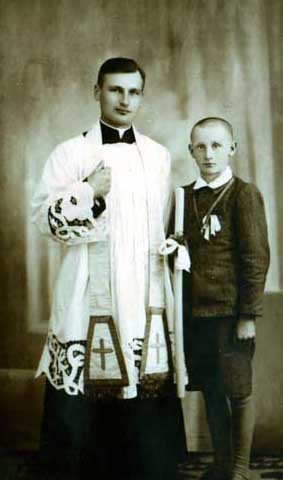
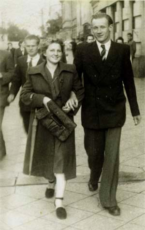
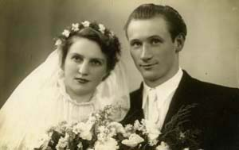
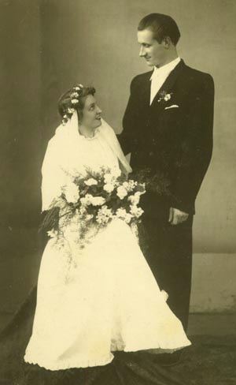
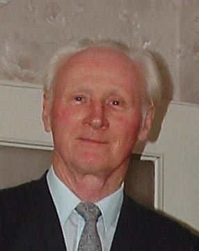

Jerzy Sawicki
Jerzy

Zofia i Jerzy
Zofia i Jerzy

Zofia i Jerzy z dziećmi.
Jerzy Stefan Sawicki urodził się 19.01.1929 roku w Siedliskach koło Nakła. W latach 40. ukończył Gimnazjum Mechaniczne w Bytomiu, następnie Liceum Mechaniczne w Częstochowie, 21.06.1951 roku. Przez wiele lat pracował w Hucie imienia Bolesława Bieruta (obecnie Huta Częstochowa). Odznaczony srebrnym i złotym krzyżami zasługi.
Zofia i Jerzy
22.09.1951 roku ożenił się z Zofią Belicą. Ślub odbył się w Katedrze Świętej Rodziny w Częstochowie. Zofia urodziła się 21.04.1931 roku w Częstochowie. W 1950 roku ukończyła Liceum Administracyjne w Częstochowie. Studiowała także w Wyższej Szkole Handlowej, ale naukę przerwała na żadanie rodziców. Zmarła 06.01.2007 roku w Częstochowie i tam została pochowana.
Zofia i Jerzy
Jerzy z córką i synem.
Jerzy Przez całe życie miał wiele pasji, a główne to: rolnictwo, ciesielstwo i miechanika samochodowa. Niemal samodzielnie wybudował dom, z zapałem uprawiał też działkę. Kochał samochody.
Zmarł 10.11.2011 roku w Częstochowie. Pochowany na cmentarzu Błeszno.

Jerzy